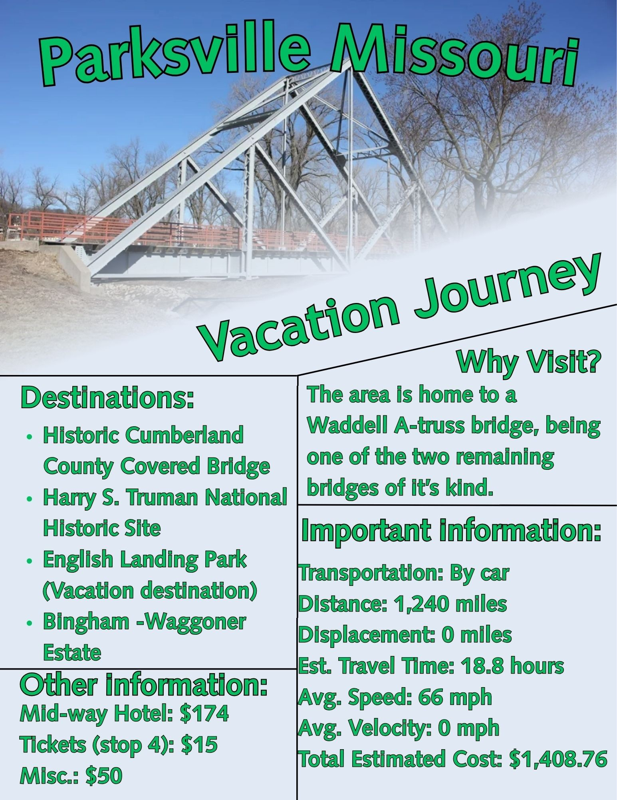
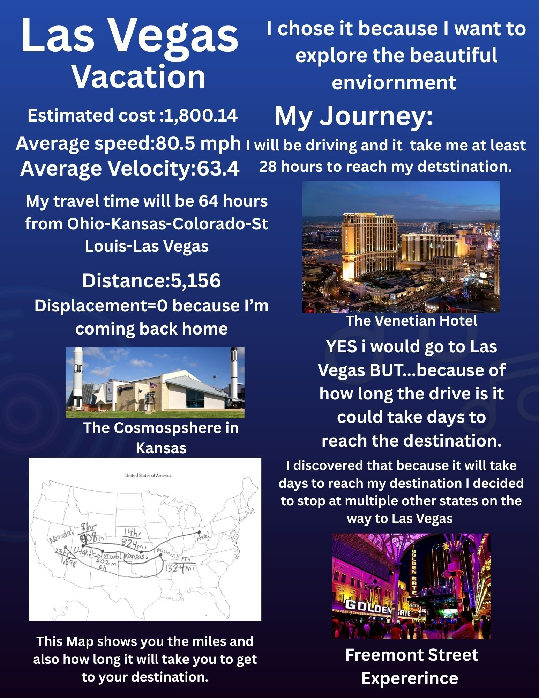
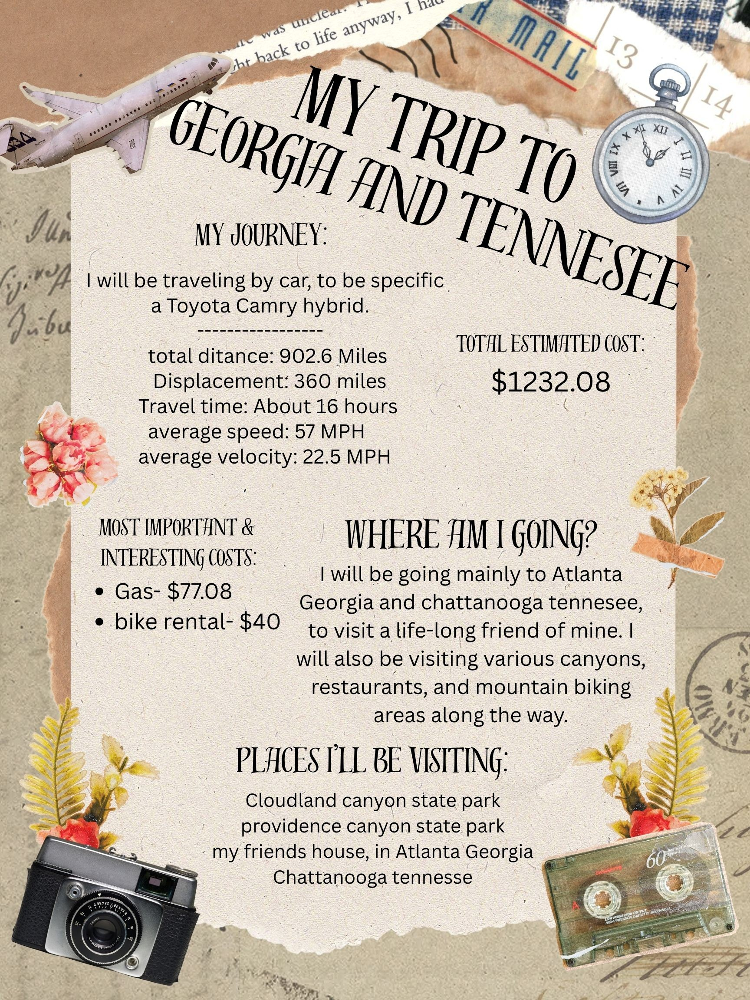

Project Overview
I designed this physical science project around a choice students could imagine making outside school. They planned a vacation or a move, chose a destination and transportation, and worked out what the trip would take. They mapped a route, used the physics of motion to describe it, researched realistic costs, and decided whether they would go ahead with the plan.
Travel made the distinction between distance and displacement concrete. A round trip can cover hundreds of miles and still end where it began. The same route also creates decisions about travel time, stops, and expenses, giving students a reason to use their calculations and research together.
Learning Objectives
I set four objectives for the project.
- Identify a frame of reference and distinguish total distance traveled from displacement, the change in position and its direction.
- Use travel time to calculate average speed and average velocity. Show the work, use appropriate units, and explain why the two values can differ.
- Use real-world sources to estimate transportation, lodging or housing, and other costs. Explain which sources were useful and credible and where estimates or assumptions were needed.
- Use calculations and research to justify a travel decision, reflect on how new evidence changed the plan, and communicate the most important information to an audience.
Instructional Design
I designed two products for different audiences. The four-page itinerary made the thinking visible. Students documented the route, showed the physics calculations, explained their budget and sources, and justified a final decision. I provided a planning template and page-by-page directions to help them organize the work.
The one-page Travel Expo summary asked students to choose what a visitor could understand in about a minute. I asked them to make the destination, route, estimated cost, and discoveries easy to find. The rubric rewarded accurate, consistent information and clear communication. Artistic ability was outside the grading criteria.
I used one rubric for both products so students could see how scientific understanding, mathematical work, research, decision-making, reflection, and communication fit together.
Implementation
- Plan the route. I asked students to pick a destination, choose transportation and major stops, and represent the route on a map. Vacation plans called for at least four stops and moving plans for at least two.
- Apply the physics and build a budget. Students used their route and travel time to show how they calculated distance, displacement, average speed, and average velocity. They researched relevant costs and explained the evidence behind a key decision and their final recommendation.
- Present and compare plans. Students made a one-page Expo summary in Canva. I used a gallery-walk guide to focus peer review on choices such as unexpected costs or especially realistic plans. The written reflection asked students to cite a classmate’s project when considering whether to revise their own plan.
Student Work Showcase
These completed Expo summaries show how students combined route information, science, costs, and visuals for an audience. Select any poster to view it at full size.
-

Parksville, MissouriA driving itinerary links historic stops to a trip budget and summarizes the round trip with zero displacement.
View poster -

Las VegasAn annotated route map and a written recommendation explain how a long drive shaped the choice to add stops.
View poster -

Georgia and TennesseeA scrapbook layout groups travel estimates, itemized costs, and destinations such as state parks and Chattanooga.
View poster


Reflection & Future Improvements
Students enjoyed the project and produced several high-quality final products. The Expo summaries gave me a way to see what students considered important enough to share with a visitor and how they organized unfamiliar information for a short read.
The unexpected restriction on Google Maps complicated the route-planning stage. Next time, I would confirm which mapping tools students can use before launch and prepare a fallback with printable maps and route distances and travel times. Some support materials also needed more structured guidance. I would add a worked route example, a table for recording each leg of the trip, and a checkpoint to review calculations and sources before students design their Expo summaries.
I would also let students choose from a wider range of creative platforms. The same rubric can assess scientific accuracy, evidence, and clarity across tools, so students can select a format that supports how they want to communicate their plan.
Supporting Instructional Materials
Download the original Word handouts I used to guide planning, assess the two products, and structure the Expo gallery walk.